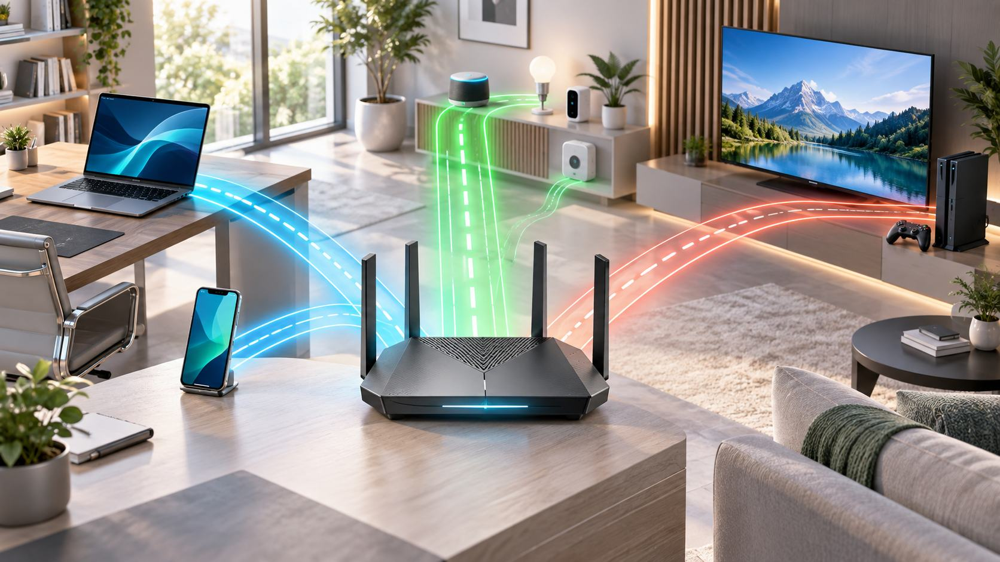

Wi-Fi 7 là gì? MLO, kênh 320 MHz và khi nào nên nâng cấp
Wi‑Fi 7 là thế hệ Wi‑Fi dựa trên IEEE 802.11be, tập trung vào thông lượng rất cao, độ trễ ổn định hơn và sử dụng phổ hiệu quả hơn. Điểm thay đổi đáng chú ý không chỉ là tốc độ tối đa, mà là khả năng dùng nhiều liên kết cùng lúc, kênh rộng hơn và tiếp tục truyền trên phần phổ sạch khi một phần kênh bị nhiễu.
Wi‑Fi 7 khác Wi‑Fi 6 và 6E ở đâu?
| Đặc điểm | Wi‑Fi 6/6E | Wi‑Fi 7 |
|---|---|---|
| Chuẩn nền | 802.11ax | 802.11be (EHT) |
| Độ rộng kênh tối đa | 160 MHz | 320 MHz |
| Điều chế cao nhất | 1024-QAM | 4096-QAM (4K QAM) |
| Dùng nhiều liên kết | Thiết bị thường hoạt động trên một link | Multi-Link Operation |
| Xử lý phần kênh bị nhiễu | Hạn chế hơn | Preamble puncturing linh hoạt hơn |
Wi‑Fi 6E không phải một thế hệ radio hoàn toàn mới; nó đưa khả năng Wi‑Fi 6 sang băng tần 6 GHz. Wi‑Fi 7 tiếp tục dùng 2,4, 5 và 6 GHz, đồng thời bổ sung cơ chế mới để phối hợp các link. Khả năng sử dụng 6 GHz và độ rộng kênh cụ thể phụ thuộc quy định từng quốc gia, router và client.
1. Multi-Link Operation là thay đổi quan trọng nhất
Trước đây, một client thường chọn một băng tần hoặc channel tại một thời điểm. Multi-Link Operation (MLO) cho phép thiết bị Wi‑Fi 7 thiết lập nhiều link và, tùy triển khai, truyền đồng thời hoặc chuyển linh hoạt giữa chúng.
- Tăng thông lượng: dữ liệu có thể được phân phối qua nhiều link.
- Giảm độ trễ: hệ thống chọn link đang ít bận thay vì chờ trên một channel.
- Tăng độ tin cậy: khi một băng tần nhiễu, lưu lượng có thể dùng link còn lại.
Lợi ích thực tế phụ thuộc cả access point lẫn client hỗ trợ cùng chế độ MLO. Một nhãn “Wi‑Fi 7” không có nghĩa mọi thiết bị đều dùng đồng thời hai radio hoặc đạt cùng mức hiệu năng.
2. Kênh 320 MHz: rộng hơn nhưng không phải ở đâu cũng tốt
Wi‑Fi 7 có thể dùng kênh rộng tới 320 MHz, gấp đôi mức 160 MHz của Wi‑Fi 6/6E. Kênh rộng giống như thêm làn đường, có thể tăng tốc độ peak cho truyền file lớn hoặc backhaul mesh.
Nhưng 320 MHz cần phổ sạch, thường gắn với băng 6 GHz, và có phạm vi xuyên tường ngắn hơn 2,4 GHz. Trong chung cư đông mạng, dùng channel hẹp hơn đôi khi ổn định hơn. Thiết bị client 160 MHz cũng không hưởng toàn bộ lợi ích của access point 320 MHz.
3. 4K QAM tăng mật độ dữ liệu
4096-QAM mã hóa nhiều bit hơn trong mỗi symbol so với 1024-QAM. Điều này nâng tốc độ khi tín hiệu mạnh và sạch. Đổi lại, các mức điều chế cao đòi hỏi tỷ lệ tín hiệu trên nhiễu tốt, nên hiệu quả lớn nhất thường xuất hiện khi client ở gần access point.
4K QAM làm tốc độ đỉnh cao hơn; nó không làm một tín hiệu yếu xuyên thêm nhiều bức tường.
4. Preamble puncturing tận dụng phần kênh còn sạch
Trên một channel rộng, chỉ một đoạn phổ bị nhiễu có thể làm giảm khả năng dùng toàn bộ channel. Preamble puncturing cho phép loại phần bị ảnh hưởng và tiếp tục truyền trên phần còn lại. Đây là cải tiến có giá trị trong môi trường đông thiết bị, dù hiệu quả phụ thuộc chipset, firmware và điều kiện vô tuyến.
Tốc độ trên hộp không phải tốc độ một thiết bị
Router thường quảng cáo tổng tốc độ lý thuyết của nhiều băng tần và spatial stream. Một laptop 2x2 chỉ dùng số stream, độ rộng kênh và chế độ mà adapter của nó hỗ trợ. Tốc độ ứng dụng còn bị trừ overhead và giới hạn bởi:
- Tốc độ đường Internet và cổng WAN.
- Cổng LAN 1 GbE, 2.5 GbE hay 10 GbE.
- Số spatial stream của router và client.
- Khoảng cách, vật cản, nhiễu và vị trí đặt access point.
- Backhaul mesh dùng dây hay dùng chung phổ vô tuyến.
- Hiệu năng CPU, lưu trữ và server đích.
Ví dụ router có liên kết Wi‑Fi trên 1 Gbps nhưng NAS chỉ nối cổng Gigabit vẫn không thể truyền file vượt đáng kể giới hạn của cổng đó.
Wi‑Fi 7 có tương thích thiết bị cũ không?
Có. Access point Wi‑Fi 7 được thiết kế tương thích ngược với thiết bị thế hệ trước trên các băng tần chúng hỗ trợ. Tuy nhiên client Wi‑Fi 6 không tự nhận MLO, 320 MHz hay 4K QAM khi kết nối vào router mới.
Thiết bị chỉ hỗ trợ WPA2 cũ và IoT 2,4 GHz có thể cần SSID hoặc policy riêng. Không nên hạ bảo mật toàn mạng chỉ để giữ một thiết bị lỗi thời; tách IoT sang VLAN/guest network khi hệ thống cho phép.
Wi‑Fi 7 cải thiện mesh như thế nào?
Mesh có thể dùng MLO và phổ 6 GHz để tăng khả năng của backhaul không dây, đồng thời điều phối lưu lượng client linh hoạt hơn. Nhưng node đặt quá xa vẫn nhận tín hiệu yếu. Ethernet backhaul tiếp tục là lựa chọn ổn định nhất khi có thể đi dây.
Trước khi mua thêm node, ưu tiên vị trí: đặt node ở nơi vẫn nhận tín hiệu tốt từ node trước, không phải ngay trong vùng mất sóng. Kiểm tra router và satellite có cổng multi-gig nếu đường Internet hoặc NAS vượt 1 Gbps.
Khi nào nên nâng cấp?
Nâng cấp có ý nghĩa khi:
- Có nhiều client Wi‑Fi 7 hoặc dự kiến thay thiết bị trong vài năm tới.
- Đường Internet trên 1 Gbps hoặc thường truyền dữ liệu lớn với NAS nội bộ.
- Ứng dụng cần độ trễ ổn định như game, XR, desktop từ xa và realtime collaboration.
- Mạng mesh không dây cần backhaul mạnh hơn.
- Router cũ thiếu bản vá, hay quá tải hoặc không phủ sóng đủ.
Chưa cần vội khi: phần lớn client vẫn là Wi‑Fi 5/6, Internet dưới 500 Mbps, vấn đề chính là vị trí router hoặc căn nhà cần thêm access point. Nâng cấp từ một hệ thống Wi‑Fi 6/6E được thiết kế tốt có thể không tạo khác biệt dễ nhận thấy cho duyệt web và streaming thông thường.
Cách chọn router hoặc access point Wi‑Fi 7
- Kiểm tra các băng tần được hỗ trợ, không chỉ tên Wi‑Fi 7.
- Xem client quan trọng hỗ trợ 160 hay 320 MHz và loại MLO nào.
- Ưu tiên ít nhất cổng WAN/LAN 2.5 GbE nếu cần tốc độ multi-gig.
- Với mesh, kiểm tra backhaul, số radio và cổng Ethernet từng node.
- Đánh giá chính sách cập nhật firmware, WPA3, guest network và VLAN.
- Chọn số access point theo mặt bằng và vật liệu tường, không theo quảng cáo diện tích.
Đo hiệu năng đúng cách
Đo Internet bằng speed test chỉ phản ánh cả Wi‑Fi lẫn ISP. Để đánh giá mạng nội bộ, dùng một server có dây multi-gig và công cụ như iPerf3. Đo tại cùng vị trí, nhiều thời điểm và ghi cả throughput, latency, jitter, packet loss.
Kiểm tra riêng 5 GHz, 6 GHz và MLO nếu giao diện cho phép. Một phép đo sát router không đại diện cho phòng ngủ sau hai bức tường. Với doanh nghiệp, khảo sát phổ và thiết kế channel/power quan trọng hơn mua access point có thông số cao nhất.
Những hiểu lầm phổ biến
- “Wi‑Fi 7 sẽ làm Internet nhanh hơn”: không vượt được tốc độ gói cước và cổng WAN.
- “320 MHz luôn tốt hơn”: channel rộng cần phổ sạch và client tương thích.
- “MLO cộng tốc độ mọi băng tần”: chế độ thực tế phụ thuộc phần cứng, driver và khu vực.
- “Đổi router sẽ hết điểm chết”: vị trí, công suất và số access point mới quyết định vùng phủ.
- “Thiết bị cũ cũng nhanh như Wi‑Fi 7”: tương thích ngược không bổ sung tính năng radio mới cho client cũ.
Kết luận
Giá trị lớn nhất của Wi‑Fi 7 nằm ở MLO, khả năng dùng phổ linh hoạt và độ trễ đáng tin cậy hơn, không chỉ ở một con số tốc độ. Nâng cấp đáng giá khi cả client, hạ tầng có dây, đường Internet và nhu cầu sử dụng cùng tận dụng được các cải tiến đó. Nếu vấn đề hiện tại là vùng phủ hoặc bố trí sai, hãy sửa kiến trúc mạng trước khi đổi thế hệ Wi‑Fi.